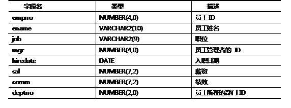

1 什么是关系型数据库管理系统
2 下列关于表的结构说法正确的是
A．表是二维的, 由行和列组成。
B．表的行(Row)是横排数据，也被称作字段(Field)。
C．表的列(Column)是纵列数据，也被称作记录(Record)。
D．表是关系数据库的基本存储结构,一个关系数据库由多个数据表(Table)组成。
3 简述几种主流的数据库及其厂商
4 简述结构化查询语言的分类
5 关于number类型，下列说法正确的是
A．在Oracle中，number表示数字类型。
B．“salary NUMBER(6,2)“表示salary列中的数据，整数位最大为4位，小数位最大位数是2位，即最大取值：9999.99。
C．“id NUMBER(4)“表示id列中的数据，整数位最大为4位，没有小数。
D．“fee NUMBER(7,2)“表示fee列中的数据，整数最大位数为7位，小数为2位。
6 关于char和varchar2，下列说法正确的是
A．char和varchar2都表示字符类型，无区别。
B．char表示固定长度的字符类型，而varchar2表示变长的字符类型。
C．“job VARCHAR2(100)”表示job列中最多可存储长度为100个字节的字符串。根据其中保存的数据长度，占用的空间是变化的，最大占用空间为100个字节。
D．“ename CHAR(20)”表示ename列中最多可存储20个字节的字符串，并且占用的空间是固定的20个字节。
7 已知表如下，下列insert语句正确的是：
已知创建student表的SQL语句如下：
- CREATE TABLE student(
- id NUMBER(4),
- name VARCHAR2(20),
- gender CHAR(1),
- birth DATE
- );
下列对student表实施插入的SQL语句正确的是：（）。
A．insert into student(id,name,birth)
values(1001,'smith','1989-01-12');
B．英文环境可以采用如下插入语句实施插入：
insert into student(id,name,birth)
values(1001,'smith','12-JAN-89');
C．中文环境可以采用如下插入语句实施插入：
insert into student(id,name,birth)
values(1001,'smith','12-1月-89');
D．insert into student(id,name,birth)
values(1001,'smith',to_date('1989-01-12','yyyy-mm-dd'));
8 创建账务账户表（Account）
帐务帐户表的信息如表-1所示：
表-1 帐务帐户表信息
请根据上述表信息创建账务账户表Account。
9 修改账务账户表（Account）
修改账务账户表，详细要求如下：
1）修改account表的表名为t_account；
2）向t_account表增加一列bak，其数据类型为varchar2，长度为50；
3）修改t_account表中的bak列的长度为40，并增加默认值的设置，默认值为“login”；
4）删除t_account表中的bak列。
10 插入账务账户数据
向t_account表中插入一条记录，该条记录的数据如表-2所示。
表- 2

11 更改账务账户数据
将账务账户表ID为1的账务账户的密码更改为801206。
12 删除账务账户数据
删除账务账户表中ID为1的账务账户信息。
13 创建示例表emp和dept
创建职员表 emp，表结构如表－3所示：
表－3职员表emp 信息
创建部门表 dept，表结构如表－4所示：
表－4 部门表 dept 信息
14 为示例表emp和dept插入示例数据
为职员表 emp插入示例数据，示例数据如图－1所示：
图－1
为部门表 dept插入示例数据，示例数据如图－2所示：
图－2